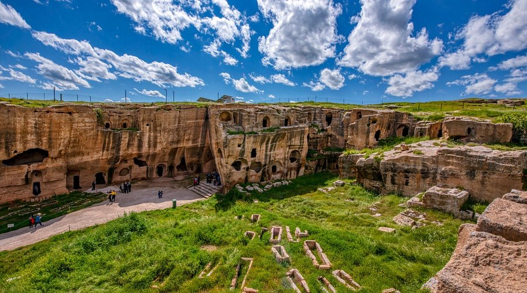
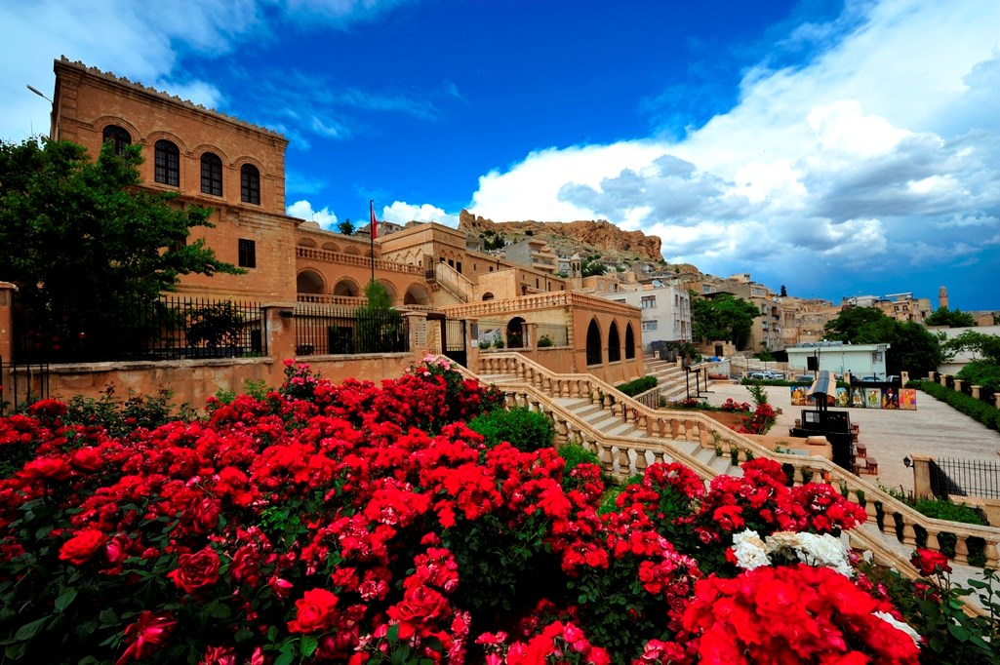
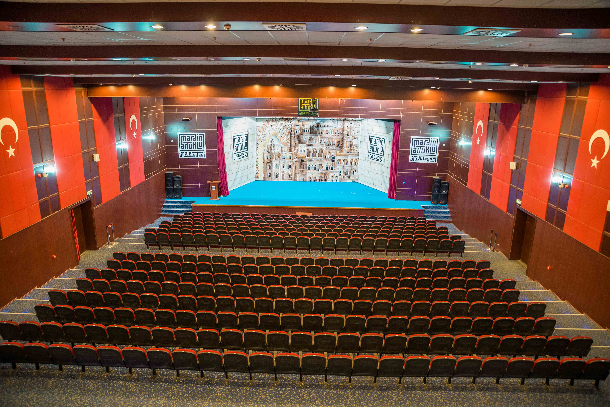

Mardin Kültürel Yerler
Medeniyetlerin Buluşma Noktası
Tarihi Yapılar

Dara Antik Kenti
Mezopotamya'nın en önemli antik kentlerinden biri.

Mor Abraham Manastırı
Süryani Ortodoks Kilisesi'nin önemli manastırlarından biri.

Ulu Cami
Artuklu döneminden kalma tarihi cami.
Müzeler

Mardin Müzesi
Bölgenin zengin tarihini ve kültürel mirasını sergileyen müze.
Sakıp Sabancı Kent Müzesi
Mardin'in kentsel ve kültürel tarihini yansıtan müze.
Kültür Merkezleri

Artuklu Kültür Merkezi
Modern sanat ve kültür etkinliklerinin merkezi.